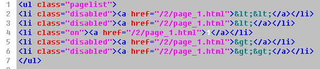

在栏目地址或分页地址输出文章列表后都会进行分页,
如果要用到分页,alist函数参数中必须带上['page'],如下所示
<?php
unset($set);
if (!isset($_GET['page'])){
$set['page']=1;//默认为第一页
}else{
$set['page']=intval($_GET['page']);
}
//1.3.5版本开始支持使用$set['page']='page';可以自动获取当前页码,无需判断
$articles=alist($set);
foreach ($articles['list'] as $a)
{
echo('<a href="'.$a['link'].'">'.$a['title'].'</a>');
}
?>
输出以上文章列表后,使用以下代码进行分页的输出
<?php //正常分页代码 pagelist($articles); //自动分页(如首页或单页的栏目),会自动对当前网址使用分页 pagelist($articles,1); //自定义分页网址 $articles['pageurl']='/123/(page).html'; pagelist($articles); ?>
分页自定义
{{$pages=pagelist($articles,,1)}}
{{loop $pages as $page}}
{{if $page['title']=='<<'}}
第一页:{{$page['url']}}<br>
{{elseif $page['title']=='<'}}
上一页:{{$page['url']}}<br>
{{elseif $page['title']=='>'}}
下一页:{{$page['url']}}<br>
{{elseif $page['title']=='>>'}}
最后一页:{{$page['url']}}<br>
{{else}}
{{/if}}
{{/loop}}
当前一共有文章 {{$articles['articlecount']}} 当前页数:{{$articles['page']}} 总共页数:{{$articles['pages']}}
默认输出的分页html代码格式如下,您可以按此编写css
